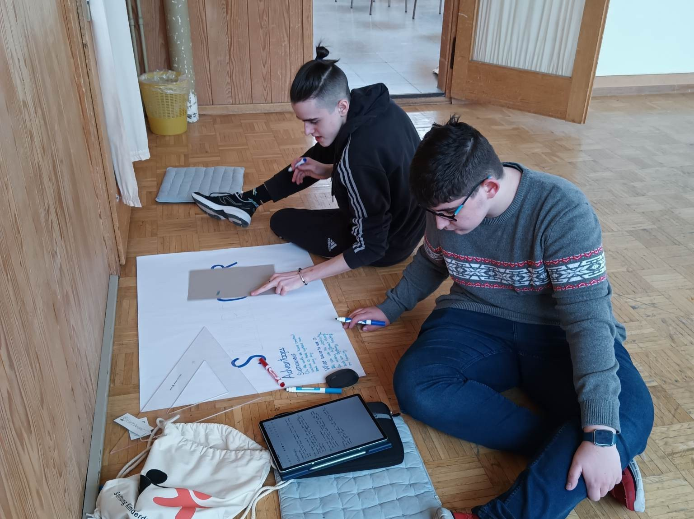
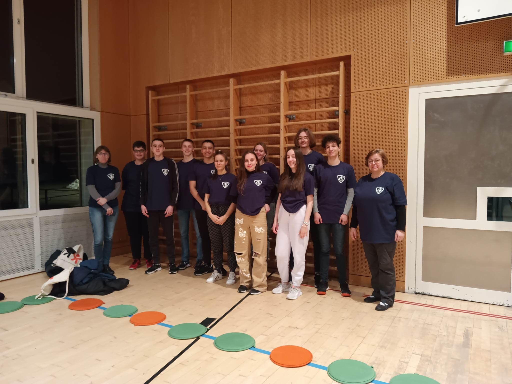

European Youth Forum Trogen 2023
The European Youth Forum Trogen (EYFT) was/is an event organized by Pestalozzi Children's Foundation every year to bring high schoolers from twelve countries togeother for a week of workshops to discuss crucial, future-forming topics with each other, bringing their won experience and background into their project.
In 2023, I had the honour to join as a part of the Hungarian delegation for this one week long journey in Trogen, Switzerland. During our time there, we focused on one topic regarding our life and future, like environment protection, media or arts & science. I joined the group focusing on Environment Protection, where we expored a range of topis impacting our planet, from deforestation in Indonesia to political proposals like Donald Trump's idea of purchasing Greenland. Through collaborative projects, role-play activities - where we could choose from to teams to join and then represent these ideas (the sale of Greenland or the deforestation of ), and discussions, we examined not just the different approaches to the solutions for the environment protection, but also the differences of our educational systems.
In our workshop, we were joined by students from Switzerland, Germany, France, Italy, Poland, Ukraine and Türkiye, bringing a lot of different perspectives to the table. We also discussed how and what can we do right now in our local environment and how can we motivate our surroindings to join our projects.
At the end of the week, each group presented their work to the other participants. Our team concluded with an engaging Kahoot! quiz to highlight the key points of protecting our environment in an interactive way. As the coordinator of the quiz, I also took an active role in presenting it.


I would like to say thank you to every oraniser of the EYFT, but especially to my team mentors. Next to that, I would like to also acknowledge the importance of the guiding teachers coming with us.
Participants: Enikő Cseke-Tímár1 (teacher) and Krisztina Fazekas1 (teacher)
Szilas Dániel Erdei1, Ádám Fazekas1, István Fülöp1, Péter Garics1, Panna Villő Kárpáti1, Mercédesz László1, Emma Merkel1, Levente László Pocsay1, Zsigmond Sárossy1, Luca Boróka Szitka1.
- Földes Ferenc Secondary Grammar School